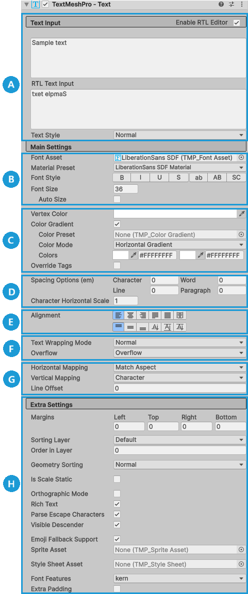
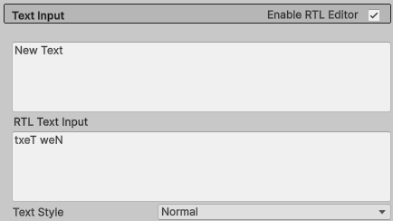
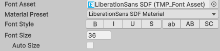
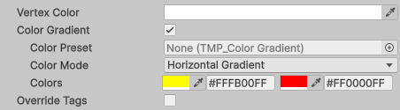
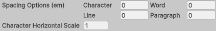
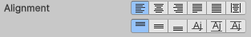
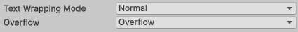
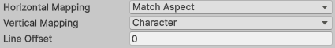
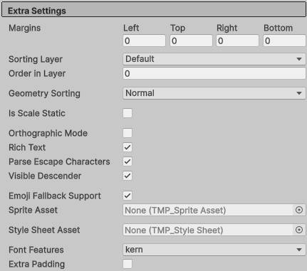

默认情况下，TextMesh Pro 三维文本 GameObject 包含以下组件：
- Rect Transform： 控制 GameObject 的位置与大小。更多信息请参阅 Rect Transform 文档。
注意
注意： 要使用 Rect Transform 组件的锚点系统，TextMesh Pro 组件所在 GameObject 的父对象也必须具有 Rect Transform 组件。
- Mesh Renderer： 渲染 GameObject。更多信息请参阅 Mesh Renderer 文档。
- TextMeshPro - Text： 包含要显示的文本，以及控制文本外观与行为的 属性 。
- 材质（Material）： 使用 TextMesh Pro 着色器的 Unity 材质，用于进一步控制文本外观。更多信息请参阅 着色器 章节。
属性概览

| 文本输入 | |
| Text: 输入要显示的文本，也可加入 富文本标记. | |
| 主要设置 | |
| B | 字体（Font）: 指定使用的字体及其基本属性，例如大小、样式等。 |
| C | 颜色（Color）: 定义文本的基础颜色或 颜色渐变 。 |
| D | 间距（Spacing）: 控制字符、单词、行和段落之间的间距。 |
| E | 对齐（Alignment）: 控制文本的水平与垂直对齐。 |
| F | 换行与溢出（Wrapping and Overflow）: 控制自动换行，以及文本超出显示区域时的处理方式。 |
| G | UV 映射（UV Mapping）: 控制纹理如何映射到文本的字面和描边。 |
| H | 额外设置（Extra Settings）: 用于控制文本外观与行为的其他选项。 |
文本输入（Text Input）
在文本区域中输入要显示的内容，并可通过以下方式自定义： 富文本标记.

| 属性： | 功能： | |
|---|---|---|
| Text | 输入要显示的文本。 | |
| 启用 RTL 编辑器（Enable RTL Editor） | 启用后，文本从右到左显示，而不是从左到右。 Inspector 会显示额外的输入框，可以查看反转后的文本并直接编辑。 文本在屏幕显示或渲染前会先反转。 |
|
| 文本样式（Text Style） | 选择在以下资源中配置的文本样式： 样式表. |
主要设置（Main Settings）
Main Settings 包含定义文本基本外观所需的属性。还可通过更换或编辑文本的以下资源，进一步定制外观： 材质.
字体（Font）
字体设置面板用于选择文本字体并自定义字体样式。

| 属性： | 功能： | |
|---|---|---|
| 字体资源（Font Asset） | 为 TextMesh Pro GameObject 选择 字体资源 。 TextMesh Pro 附带多个字体资源，也可以从 TrueType（ttf）等标准字体文件创建其他资源。 注意： 新文本对象的默认字体资源可在以下位置设置： TextMesh Pro 设置. |
|
| 材质预设（Material Preset） | 为字体选择材质。 每个字体资源都有默认材质，也可以为其创建自定义材质。 预设列表包含名称中含有字体资源名称，并使用对应字体图集纹理的所有材质。 |
|
| 字体样式（Font Style） | 启用标准文本样式选项。 这些选项可以任意组合，但小写、大写和小型大写这三个大小写选项相互排斥。 |
|
| B | 将文本设为粗体。 粗体文本的外观在字体资源属性中定义。 |
|
| I | 将文本设为斜体。 斜体文本的外观在字体资源属性中定义。 |
|
| U | 为文本添加下划线。 在基线下方额外绘制一条线。 |
|
| S | 为文本添加删除线。 在基线上方额外绘制一条线。 |
|
| ab | 渲染前将文本转换为小写。 此操作不会改变 Text 字段中的文本大小写。 |
|
| AB | 渲染前将文本转换为大写。 此操作不会改变 Text 字段中的文本大小写。 |
|
| SC | 使用小型大写（small caps）。 文本全部以大写显示，但原本输入为大写的字母会显示得更大。 |
|
| 字号（Font Size） | 指定文本显示大小，单位为点（point）。 | |
| 自动字号（Auto Size） | 启用后，根据以下选项自动设置字号： 自动字号选项（Auto Size Options）. 启用后，TextMesh Pro 会多次排版文本，以找到合适的字号。这一过程开销较大，因此应避免对频繁变化的动态文本使用自动字号。 提示： 对于静态文本，可以先启用 自动字号（Auto Size），记下 Font Size 字段显示的计算结果，再关闭 Auto Size，手动应用该字号。 |
|
| 自动字号选项（Auto Size Options） | 定义自动调整文本字号的基本规则。 | |
| 最小 | 指定允许的最小字号，单位为点。 | |
| Max（最大） | 指定允许的最大字号，单位为点。 | |
| WD% | 指定自动调整字号时，字符宽度允许缩小的最大百分比。 TextMesh Pro 会挤压字符，使其看起来更高。通常只有数字适合这种处理。 |
|
| 行（Line） | 调整行高。 这有助于在给定空间中容纳更大的字号。 |
颜色（Color）
TextMesh Pro 使用顶点颜色给文本着色。可以应用统一颜色，也可以应用 渐变 ，最多包含四种颜色。

| 属性： | 功能： | |
|---|---|---|
| 顶点颜色（Vertex Color） | 选择文本的主颜色。 TextMesh Pro GameObject 或其材质中定义的所有颜色与纹理，都会与该颜色相乘。 |
|
| 颜色渐变（Color Gradient） | 启用后，为每个字符精灵应用 颜色渐变 。 随后可设置渐变类型与颜色，也可应用 颜色渐变预设. 渐变颜色会与以下颜色相乘： 顶点颜色（Vertex Color）。如果 顶点颜色（Vertex Color） 设为白色，只会看到渐变颜色；设为黑色，则完全看不到渐变颜色。 |
|
| 颜色预设（Color Preset） | 为 TextMesh Pro GameObject 选择 颜色渐变预设. 应用预设后，它的 颜色模式（Color Mode） 和 颜色（Colors） 会取代 Inspector 中文本自身的局部属性。 编辑这些属性会修改预设，进而影响所有使用该预设的 TextMesh Pro GameObject。 将此属性设为 无（None） 可恢复文本自身的渐变属性。 |
|
| 颜色模式（Color Mode） | 选择要应用的颜色渐变类型。 TextMesh Pro 会分别对每个字符应用渐变。 |
|
| 单色（Single） | 用统一颜色修改基础 顶点颜色（Vertex Color）. | |
| 水平渐变（Horizontal Gradient） | 两种颜色分别从字符的左右两侧渐变。 | |
| 垂直渐变（Vertical Gradient） | 两种颜色分别从字符顶部和底部渐变。 | |
| 四角渐变（Four Corners Gradient） | 四种颜色分别从字符的四个角渐变。 | |
| 颜色（Colors） | 选择每一种渐变颜色。 可设置的颜色数量取决于渐变类型；颜色字段的排列与颜色在渐变中的位置对应，例如左／右、上／下，或四角渐变的两行两列。 可以通过以下任一方式设置颜色： 色块（Swatch）： 单击打开颜色选择器。 吸管（Eyedropper）： 单击从屏幕任意位置拾取颜色。 十六进制值（Hex Value）： 直接输入 RGBA 十六进制值。 |
|
| 覆盖标签（Override Tags） | 启用后，忽略以下标记中改变文本颜色的标签： 富文本标签 。 |
间距（Spacing）
这些选项控制字符、单词、行与段落之间的间距，可用于微调单个 TextMesh Pro GameObject 的文本，而不必调整其 字体资源.

要调整同一 TextMesh Pro GameObject 内部不同部分的间距，请使用 富文本标签.
| 属性： | 功能： | |
|---|---|---|
| 字符（Character） | 设置该 TextMesh Pro GameObject 的字符间距。 | |
| 单词（Word） | 设置该 TextMesh Pro GameObject 的单词间距。 | |
| 行（Line） | 设置该 TextMesh Pro GameObject 的行间距。 | |
| 段落（Paragraph） | 设置该 TextMesh Pro GameObject 的段落间距。 显式换行符用于划分段落。 |
|
| 字符水平缩放（Character Horizontal Scale） | 缩放该 TextMesh Pro GameObject 中字符的水平尺寸。 |
对齐（Alignment）
水平与垂直对齐选项决定文本在显示区域中的位置。

| 属性： | 功能： | |
|---|---|---|
| [水平对齐选项] | ||
| Left、Center、Right（左对齐、居中、右对齐） | 在显示区域中沿水平方向定位文本，不改变文本本身。 | |
| Justified、Flush（两端对齐、完全两端对齐） | 通过增大单词和字符之间的距离，将文本拉伸到显示区域的整个宽度。 间距混合（Wrap Mix） 选项控制单词间距与字符间距的分配比例。 Justified 模式不会拉伸段落的最后一行，而 Flush 模式会拉伸最后一行。 |
|
| 几何居中（Geometry Center） | 根据文本网格而不是文本度量进行居中。 差异并非总是明显，但某些情况下，此模式比普通 Center 对齐的视觉效果更好。 |
|
| [垂直对齐选项] | ||
| Top、Middle、Bottom（顶部、居中、底部） | 在显示区域中沿垂直方向定位文本，不改变文本本身。 | |
| 基线（Baseline） | 使文本行的基线与显示区域的中部对齐。 适用于单行文本。 |
|
| 中线（Midline） | 可作为 Middle 对齐的替代方式。 此选项根据文本网格的边界而非以下度量决定垂直位置： 行度量。在空间紧凑、上伸部和下伸部可能超出过多时，这种方式很有用。 |
|
| 大写字母线（Capline） | 使第一行文本的中部与显示区域的中部对齐。 | |
| 间距混合（Wrap Mix，W <-> C） | 水平对齐设为以下模式时，调整额外单词间距与字符间距的分配比例： Justified 或 Flush. |
换行与溢出（Wrapping and Overflow）
换行用于拆分文本行，使其不超过显示区域的宽度。通常在单词边界处换行，但长度超过整行的单词也会被拆分。溢出设置决定文本无法完全容纳于显示区域时的处理方式。

某些溢出选项会优先于换行设置。例如 Overflow 设为 Truncate 时，文本一到显示区域边缘便被截断，无论是否启用 Wrapping。
| 属性： | 功能： | |
|---|---|---|
| 文本换行模式（Text Wrapping Mode） | 控制文本的换行模式。 | |
| 不换行（No Wrap） | 禁用自动换行。 | |
| 常规（Normal） | 启用自动换行。 | |
| 保留空白（Preserve Whitespace） | 启用自动换行，同时保留空白字符。 | |
| 保留空白且不换行（Preserve Whitespace No Wrap） | 禁用自动换行，同时保留空白字符。 | |
| 溢出（Overflow） | 指定文本无法完全容纳于显示区域时的处理方式。 | |
| 溢出（Overflow） | 允许文本超出显示区域边界，但仍会在启用以下选项时换行： 换行（Wrapping） 。 | |
| 省略号（Ellipsis） | 截断文本并插入省略号（…），表示省略了部分内容。 | |
| 遮罩（Masking） | 类似于 溢出（Overflow），但着色器会隐藏显示区域之外的所有内容。 | |
| 截断（Truncate） | 文本无法继续容纳时，截断文本。 | |
| Scroll Rect | 这是类似于以下模式的旧版模式： 遮罩（Masking）。此选项仅用于兼容较旧的 TextMesh Pro 项目。新项目应改用 Masking 模式。 | |
| 分页（Page） | 将文本拆分为多个页面，每页都能容纳于显示区域。 可以选择要显示的页面，也可使用富文本手动插入分页符。 注意： 垂直对齐选项分别作用于每个页面。 |
|
| 链接（Linked） | 将超出的文本继续显示到所选择的另一个 TextMesh Pro GameObject 中。 适用于创建多栏文本。 |
UV 映射（UV Mapping）
部分 TextMesh Pro 着色器 允许为文本应用一张或多张图像纹理。以下选项控制纹理如何拉伸以适配文本。

还可以在着色器自身中编辑其专有的纹理选项。可用选项取决于使用的着色器。
为文本添加纹理时，必须确保纹理资源的 环绕模式（Wrap Mode） 设为 重复（Repeat），否则应用到文本时，纹理很可能严重变形。更多信息请参阅 渲染纹理文档 ，位于 Unity 手册中。
| 属性： | 功能： | |
|---|---|---|
| 水平映射（Horizontal Mapping） | 使用支持纹理的着色器时，指定纹理如何在水平方向映射到文本。 | |
| 字符（Character） | 将纹理在水平方向拉伸到每个字符精灵的宽度。 | |
| 行（Line） | 将纹理在水平方向拉伸到每一行的整个宽度。 | |
| 段落（Paragraph） | 将纹理在水平方向拉伸到全部文本的宽度。 | |
| 匹配宽高比（Match Aspect） | 在水平方向缩放纹理，保持其宽高比并避免变形。 使用此水平映射模式时， 垂直映射（Vertical Mapping） 决定纹理如何映射到文本，且必须设为以下模式以外的值： 匹配宽高比（Match Aspect）. |
|
| 垂直映射（Vertical Mapping） | 使用支持纹理的着色器时，指定纹理如何在垂直方向映射到文本。 | |
| 字符（Character） | 将纹理在垂直方向拉伸到每个字符精灵的高度。 | |
| 行（Line） | 将纹理在垂直方向拉伸到每行的整个宽度。 | |
| 段落（Paragraph） | 将纹理在垂直方向拉伸到全部文本。 | |
| 匹配宽高比（Match Aspect） | 在垂直方向缩放纹理，保持其宽高比并避免变形。 使用此垂直映射模式时， 水平映射（Horizontal Mapping） 决定纹理如何映射到文本，且必须设为以下模式以外的值： 匹配宽高比（Match Aspect）. |
|
| 行偏移（Line Offset） | Horizontal Mapping 设为 Line、 段落（Paragraph）或是 匹配宽高比（Match Aspect）时，可设置此值，为后续每一行依次增加水平纹理偏移。 此值会加到着色器中指定的 Offset X 值上。 |
额外设置（Extra Settings）
本节包含进一步控制文本外观与行为的其他选项。

| 属性： | 功能： | |
|---|---|---|
| 边距（Margins） | 设置正值可增大文本与文本容器边界之间的距离。 负值会使文本超出文本容器的边界。 可分别设置 左（Left）、 上（Top）、 右（Right）和 下（Bottom） 四个边距。 也可在 Scene 视图中拖动文本容器控件（黄色矩形）的手柄调整边距。 |
|
| 排序层（Sorting Layer） | ||
| 层内顺序（Order in Layer） | ||
| 几何排序（Geometry Sorting） | 每个字符都位于一个四边形中。 几何排序（Geometry Sorting） 控制 TextMesh Pro 对这些四边形的排序方式，决定两个四边形重叠时哪个字符显示在上方。 | |
| 常规（Normal） | TextMesh Pro 按四边形在网格中的顺序绘制。重叠时，“较晚”的四边形显示在“较早”的四边形上方。 | |
| 反向（Reverse） | TextMesh Pro 按反向顺序绘制四边形。重叠时，“较早”的四边形显示在“较晚”的四边形上方。 | |
| 缩放是否静态（Is Scale Static） | 启用后，将该 TextMesh Pro GameObject 的缩放视为静态，使其不参与 InternalUpdate 回调。该回调用于在对象或其父对象缩放时更新 SDF Scale。 | |
| 正交模式（Orthographic Mode） | 使用正交摄像机创建与摄像机对齐的文本时，启用此选项。 它会阻止 TextMesh Pro 着色器使用透视校正。 |
|
| 富文本 | 启用此选项可关闭该 TextMesh Pro GameObject 的富文本支持。 关闭富文本支持时，不会解析标签，而是将其作为普通文本渲染。 |
|
| 解析转义字符（Parse Escape Characters） | 启用后，TextMesh Pro 会将反斜杠转义的字符解释为特殊字符。 例如， \n 会被解释为换行符， \t 会被解释为制表符，依此类推。 注意： 此设置作用于渲染的文本。在代码中，转义字符已经由编译器解析。 |
|
| 可见下伸部（Visible Descender） | 通过脚本逐渐显示文本时，可使用此选项。 启用后，文本从底部开始显示；随着新行出现，已有内容向上移动。 禁用后，文本从上向下显示。 要设置此类逐渐显示效果，还必须将垂直对齐设为 Bottom。 |
|
| 表情符号后备支持（Emoji Fallback Support） | 禁用此选项可关闭以下功能： 彩色表情符号 ，作用于该 TextMesh Pro GameObject。 | |
| 精灵资源（Sprite Asset） | ||
| 样式表资源（Style Sheet Asset） | 文本对象使用的样式表，会覆盖默认样式表。 | |
| 字体特性（Font Features） | 控制启用哪些 OpenType 字体特性（FontFeatures） 。 | |
| 额外内边距（Extra Padding） | 启用后，为字符精灵增加额外内边距。 TextMesh Pro 创建的精灵会尽量贴合可见文本，但结果并非始终完美。此设置可以减少字形在精灵边界处被裁切的概率。 |